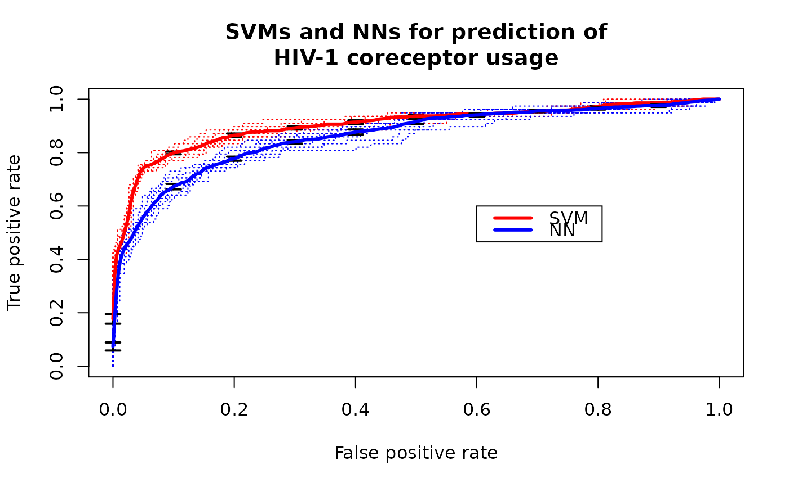

R/zzz.R
ROCR.hiv.RdLinear support vector machines (libsvm) and neural networks (R package nnet) were applied to predict usage of the coreceptors CCR5 and CXCR4 based on sequence data of the third variable loop of the HIV envelope protein.
data(ROCR.hiv)A list consisting of the SVM (ROCR.hiv$hiv.svm) and NN
(ROCR.hiv$hiv.nn) classification data. Each of those is in turn a list
consisting of the two elements $predictions and $labels (10
element list representing cross-validation data).
Sing, T. & Beerenwinkel, N. & Lengauer, T. "Learning mixtures of localized rules by maximizing the area under the ROC curve". 1st International Workshop on ROC Analysis in AI, 89-96, 2004.
library(ROCR)
data(ROCR.hiv)
attach(ROCR.hiv)
pred.svm <- prediction(hiv.svm$predictions, hiv.svm$labels)
pred.svm
#> A prediction instance
#> with 10 cross validation runs (equal lengths)
perf.svm <- performance(pred.svm, 'tpr', 'fpr')
perf.svm
#> A performance instance
#> 'False positive rate' vs. 'True positive rate' (alpha: 'Cutoff')
#> for 10 cross validation runs
pred.nn <- prediction(hiv.nn$predictions, hiv.svm$labels)
pred.nn
#> A prediction instance
#> with 10 cross validation runs (equal lengths)
perf.nn <- performance(pred.nn, 'tpr', 'fpr')
perf.nn
#> A performance instance
#> 'False positive rate' vs. 'True positive rate' (alpha: 'Cutoff')
#> for 10 cross validation runs
plot(perf.svm, lty=3, col="red",main="SVMs and NNs for prediction of
HIV-1 coreceptor usage")
plot(perf.nn, lty=3, col="blue",add=TRUE)
plot(perf.svm, avg="vertical", lwd=3, col="red",
spread.estimate="stderror",plotCI.lwd=2,add=TRUE)
plot(perf.nn, avg="vertical", lwd=3, col="blue",
spread.estimate="stderror",plotCI.lwd=2,add=TRUE)
legend(0.6,0.6,c('SVM','NN'),col=c('red','blue'),lwd=3)
